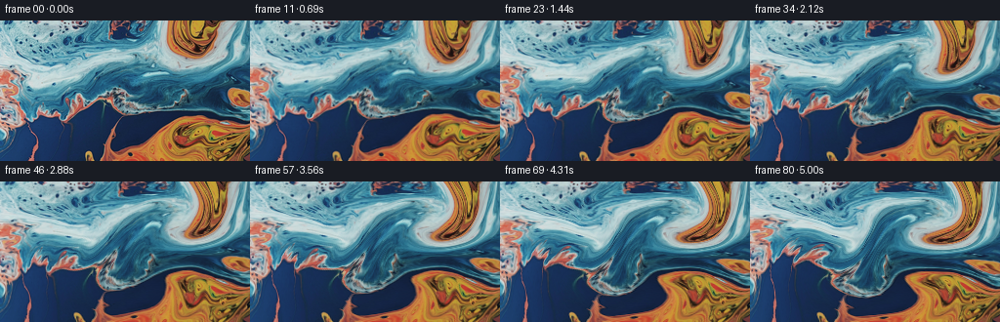
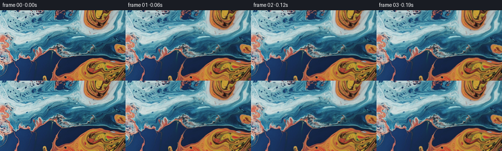

CODING AGENTS AS PIXEL WORLD MODELS
traex/GPT-6.1-Sol · 0000_s2
点击播放 · 原生 RGB 像素
逐轮保存的候选
回放视频、检查图与代码变化。
每份候选均可单独播放。实际图片检查记录在下方工具轨迹中。
候选 01播放与检查图
点击播放 · 原生 RGB 像素


展开代码变化
--- 上一保存版本
+++ 本次保存版本
@@ -0,0 +1,127 @@
+"""Animate the supplied liquid macro photograph using smooth, multiscale flow.
+
+No synthetic textures are substituted: all colour and fine detail originate in
+first_frame.png. Backward characteristics sample the original photograph afresh
+for every frame, so the moving liquid does not progressively become blurred.
+"""
+from pathlib import Path
+import json
+import numpy as np
+from PIL import Image
+import artifact_io
+
+ROOT = Path(__file__).resolve().parent
+
+
+def bilinear(image, x, y):
+ h, w = image.shape[:2]
+ x = np.clip(x, 0, w - 1)
+ y = np.clip(y, 0, h - 1)
+ ix = np.floor(x).astype(np.int32)
+ iy = np.floor(y).astype(np.int32)
+ fx = (x - ix)[..., None]
+ fy = (y - iy)[..., None]
+ jx = np.minimum(ix + 1, w - 1)
+ jy = np.minimum(iy + 1, h - 1)
+ return ((image[iy, ix] * (1 - fx) + image[iy, jx] * fx) * (1 - fy)
+ + (image[jy, ix] * (1 - fx) + image[jy, jx] * fx) * fy)
+
+
+def velocity(x, y, t, w, h):
+ # A stream function gives a divergence-free liquid velocity. Its zero
+ # boundary value keeps material inside the shot, with tangential movement
+ # along the edges rather than duplicated/empty pixels.
+ ax = np.pi / (w - 1)
+ ay = np.pi / (h - 1)
+ sx, cx = np.sin(ax * x), np.cos(ax * x)
+ sy, cy = np.sin(ay * y), np.cos(ay * y)
+ envelope = sx * sy
+ ex, ey = ax * cx * sy, ay * sx * cy
+ potential = np.full_like(x, 175.0)
+ px = np.zeros_like(x)
+ py = np.zeros_like(x)
+
+ # Counterturning eddies gently stretch the blue/orange pigment boundaries.
+ eddies = ((188., 31., 38., 28., 470., .32),
+ (174., 116., 47., 29., -365., 1.4),
+ (71., 78., 48., 34., 290., 2.5),
+ (110., 27., 37., 24., -190., 3.6))
+ for x0, y0, rx, ry, amplitude, phase in eddies:
+ xc = x0 + 3.0 * (np.sin(.38 * t + phase) - np.sin(phase))
+ yc = y0 + 2.0 * (np.cos(.43 * t + phase) - np.cos(phase))
+ dx, dy = x - xc, y - yc
+ g = amplitude * (1 + .12 * np.sin(.66 * t + phase)) * np.exp(
+ -.5 * ((dx / rx) ** 2 + (dy / ry) ** 2))
+ potential += g
+ px -= g * dx / rx ** 2
+ py -= g * dy / ry ** 2
+
+ # Small, travelling undulations ride on the broad circulation. They are
+ # intentionally slower than the high-frequency detail in the photograph.
+ for kx, ky, amplitude, omega, phase in (
+ (.061, .075, 20., .87, .7),
+ (-.083, .049, 13., -.72, 2.1),
+ (.13, .11, 5.5, 1.1, 4.3),
+ ):
+ p = kx * x + ky * y - omega * t + phase
+ s, c = np.sin(p), np.cos(p)
+ potential += amplitude * s
+ px += amplitude * kx * c
+ py += amplitude * ky * c
+ return ey * potential + envelope * py, -(ex * potential + envelope * px)
+
+
+def generate():
+ spec = json.loads((ROOT / 'task_spec.json').read_text())
+ n, w, h, fps = spec['frames'], spec['width'], spec['height'], spec['fps']
+ first = np.asarray(Image.open(ROOT / 'first_frame.png').convert('RGB'))
+ assert first.shape == (h, w, 3)
+ source = first.astype(np.float32)
+ y, x = np.mgrid[:h, :w].astype(np.float32)
+ result = np.empty((n, h, w, 3), dtype=np.uint8)
+ result[0] = first
+ measurements = []
+ for i in range(1, n):
+ t = i / fps
+ # Midpoint integration of backward paths in the time-dependent field.
+ steps = max(1, int(np.ceil(t / .16)))
+ dt = t / steps
+ qx, qy = x.copy(), y.copy()
+ for j in range(steps):
+ clock = t - j * dt
+ vx, vy = velocity(qx, qy, clock, w, h)
+ mx, my = qx - .5 * dt * vx, qy - .5 * dt * vy
+ vx, vy = velocity(mx, my, clock - .5 * dt, w, h)
+ qx -= dt * vx
+ qy -= dt * vy
+
+ # Weak surface refraction, switched on continuously from the first
+ # frame. Coarse warp is advective; these fine waves oscillate locally.
+ window = np.sin(np.pi * x / (w - 1)) * np.sin(np.pi * y / (h - 1))
+ onset = 1 - np.exp(-1.1 * t)
+ qx += onset * window * (.57 * np.sin(.19 * x + .15 * y - 1.9 * t)
+ + .23 * np.sin(.32 * y + .06 * x + 1.35 * t))
+ qy += onset * window * (.48 * np.sin(.16 * x - .20 * y + 1.6 * t)
+ + .21 * np.sin(.31 * x + .07 * y - 1.2 * t))
+ rgb = bilinear(source, qx, qy)
+ # Gentle changing reflection brightness, not a global exposure pulse.
+ shine = (.025 * onset * window *
+ np.sin(.067 * x + .091 * y - .95 * t) *
+ np.cos(.033 * x - .055 * y + .38 * t))
+ bright = np.clip((rgb.mean(axis=2) - 50.) / 165., 0, 1)
+ rgb *= (1 + shine * (.3 + .7 * bright))[..., None]
+ result[i] = np.clip(np.rint(rgb), 0, 255).astype(np.uint8)
+ measurements.append((float(np.mean(np.hypot(qx-x,qy-y))),
+ float(np.max(np.hypot(qx-x,qy-y)))))
+ assert np.array_equal(result[0], first)
+ artifact_io.save(result, ROOT)
+ delta = np.abs(np.diff(result.astype(np.float32), axis=0))
+ print('Saved:', result.shape, result.dtype)
+ print('Frame-to-frame mean RGB changes:', np.round(delta.mean((1,2,3))[::10], 3))
+ print('Final mean/max displacement:', measurements[-1])
+ print('Final vs first mean RGB change:', np.abs(result[-1].astype(float)-source).mean())
+ return result
+
+
+if __name__ == '__main__':
+ generate()
可观测工具轨迹
实际执行的命令与返回图片。
命令 1exit 0
/bin/bash -lc 'ls -la && cat prompt.txt && cat GENERATION_RULES.md'
命令 2exit 0
/bin/bash -lc "cat task_spec.json && cat artifact_io.py && python - <<'PY'
from PIL import Image
import numpy as np
im=np.asarray(Image.open('first_frame.png').convert('RGB'))
print(im.shape,im.min(axis=(0,1)),im.max(axis=(0,1)), im.mean(axis=(0,1)))
# cells represented by their mean RGB and color classification
sm=np.asarray(Image.fromarray(im).resize((32,18)))
for y in range(18):
print(' '.join('%02x%02x%02x'%tuple(sm[y,x]) for x in range(32)))
print('CLASS GRID')
sm=np.asarray(Image.fromarray(im).resize((64,36)))
for row in sm:
print(''.join('O' if int(p[0])>int(p[2])*1.3 and p[0]>80 else 'o' if p[0]>p[2] and p[0]>55 else 'B' if p[2]>p[0]*1.5 and p[2]>70 else 'b' if p[2]>p[0] and p[2]>35 else '.' if max(p)<55 else ':' for p in row))
PY"命令 3exit 0
/bin/bash -lc "python - <<'PY'
import numpy as np
from PIL import Image
im=np.asarray(Image.open('first_frame.png'),dtype=float)
for s in [1,2,4,8,16]:
print('difference at distance',s,'x',np.mean(abs(im[:,s:]-im[:,:-s])),'y',np.mean(abs(im[s:]-im[:-s])))
l=im.mean(2)
print('pixel quantiles',np.percentile(l,[1,10,25,50,75,90,99]))
for y in range(0,144,24):
print('local',y, [(round(l[y:y+24,x:x+32].mean(),1),round(l[y:y+24,x:x+32].std(),1)) for x in range(0,256,32)])
PY"命令 4exit 0
/bin/bash -lc "cat > generate.py <<'PY'
\"\"\"Animate the supplied liquid macro photograph using smooth, multiscale flow.
No synthetic textures are substituted: all colour and fine detail originate in
first_frame.png. Backward characteristics sample the original photograph afresh
for every frame, so the moving liquid does not progressively become blurred.
\"\"\"
from pathlib import Path
import json
import numpy as np
from PIL import Image
import artifact_io
ROOT = Path(__file__).resolve().parent
def bilinear(image, x, y):
h, w = image.shape[:2]
x = np.clip(x, 0, w - 1)
y = np.clip(y, 0, h - 1)
ix = np.floor(x).astype(np.int32)
iy = np.floor(y).astype(np.int32)
fx = (x - ix)[..., None]
fy = (y - iy)[..., None]
jx = np.minimum(ix + 1, w - 1)
jy = np.minimum(iy + 1, h - 1)
return ((image[iy, ix] * (1 - fx) + image[iy, jx] * fx) * (1 - fy)
+ (image[jy, ix] * (1 - fx) + image[jy, jx] * fx) * fy)
def velocity(x, y, t, w, h):
# A stream function gives a divergence-free liquid velocity. Its zero
# boundary value keeps material inside the shot, with tangential movement
# along the edges rather than duplicated/empty pixels.
ax = np.pi / (w - 1)
ay = np.pi / (h - 1)
sx, cx = np.sin(ax * x), np.cos(ax * x)
sy, cy = np.sin(ay * y), np.cos(ay * y)
envelope = sx * sy
ex, ey = ax * cx * sy, ay * sx * cy
potential = np.full_like(x, 175.0)
px = np.zeros_like(x)
py = np.zeros_like(x)
# Counterturning eddies gently stretch the blue/orange pigment boundaries.
eddies = ((188., 31., 38., 28., 470., .32),
(174., 116., 47., 29., -365., 1.4),
(71., 78., 48., 34., 290., 2.5),
(110., 27., 37., 24., -190., 3.6))
for x0, y0, rx, ry, amplitude, phase in eddies:
xc = x0 + 3.0 * (np.sin(.38 * t + phase) - np.sin(phase))
yc = y0 + 2.0 * (np.cos(.43 * t + phase) - np.cos(phase))
dx, dy = x - xc, y - yc
g = amplitude * (1 + .12 * np.sin(.66 * t + phase)) * np.exp(
-.5 * ((dx / rx) ** 2 + (dy / ry) ** 2))
potential += g
px -= g * dx / rx ** 2
py -= g * dy / ry ** 2
# Small, travelling undulations ride on the broad circulation. They are
# intentionally slower than the high-frequency detail in the photograph.
for kx, ky, amplitude, omega, phase in (
(.061, .075, 20., .87, .7),
(-.083, .049, 13., -.72, 2.1),
(.13, .11, 5.5, 1.1, 4.3),
):
p = kx * x + ky * y - omega * t + phase
s, c = np.sin(p), np.cos(p)
potential += amplitude * s
px += amplitude * kx * c
py += amplitude * ky * c
return ey * potential + envelope * py, -(ex * potential + envelope * px)
def generate():
spec = json.loads((ROOT / 'task_spec.json').read_text())
n, w, h, fps = spec['frames'], spec['width'], spec['height'], spec['fps']
first = np.asarray(Image.open(ROOT / 'first_frame.png').convert('RGB'))
assert first.shape == (h, w, 3)
source = first.astype(np.float32)
y, x = np.mgrid[:h, :w].astype(np.float32)
result = np.empty((n, h, w, 3), dtype=np.uint8)
result[0] = first
measurements = []
for i in range(1, n):
t = i / fps
# Midpoint integration of backward paths in the time-dependent field.
steps = max(1, int(np.ceil(t / .16)))
dt = t / steps
qx, qy = x.copy(), y.copy()
for j in range(steps):
clock = t - j * dt
vx, vy = velocity(qx, qy, clock, w, h)
mx, my = qx - .5 * dt * vx, qy - .5 * dt * vy
vx, vy = velocity(mx, my, clock - .5 * dt, w, h)
qx -= dt * vx
qy -= dt * vy
# Weak surface refraction, switched on continuously from the first
# frame. Coarse warp is advective; these fine waves oscillate locally.
window = np.sin(np.pi * x / (w - 1)) * np.sin(np.pi * y / (h - 1))
onset = 1 - np.exp(-1.1 * t)
qx += onset * window * (.57 * np.sin(.19 * x + .15 * y - 1.9 * t)
+ .23 * np.sin(.32 * y + .06 * x + 1.35 * t))
qy += onset * window * (.48 * np.sin(.16 * x - .20 * y + 1.6 * t)
+ .21 * np.sin(.31 * x + .07 * y - 1.2 * t))
rgb = bilinear(source, qx, qy)
# Gentle changing reflection brightness, not a global exposure pulse.
shine = (.025 * onset * window *
np.sin(.067 * x + .091 * y - .95 * t) *
np.cos(.033 * x - .055 * y + .38 * t))
bright = np.clip((rgb.mean(axis=2) - 50.) / 165., 0, 1)
rgb *= (1 + shine * (.3 + .7 * bright))[..., None]
result[i] = np.clip(np.rint(rgb), 0, 255).astype(np.uint8)
measurements.append((float(np.mean(np.hypot(qx-x,qy-y))),
float(np.max(np.hypot(qx-x,qy-y)))))
assert np.array_equal(result[0], first)
artifact_io.save(result, ROOT)
delta = np.abs(np.diff(result.astype(np.float32), axis=0))
print('Saved:', result.shape, result.dtype)
print('Frame-to-frame mean RGB changes:', np.round(delta.mean((1,2,3))[::10], 3))
print('Final mean/max displacement:', measurements[-1])
print('Final vs first mean RGB change:', np.abs(result[-1].astype(float)-source).mean())
return result
if __name__ == '__main__':
generate()
PY
OPENBLAS_NUM_THREADS=1 python generate.py"命令 5exit 0
/bin/bash -lc "python - <<'PY'
from PIL import Image
import numpy as np
import json
from pathlib import Path
p=np.load('pixels.npz')['pixels']
f=np.stack([(p>>16)&255,(p>>8)&255,p&255],axis=-1).transpose(2,0,1,3).astype(np.uint8)
assert f.shape == (81,144,256,3)
assert np.array_equal(f[0], np.asarray(Image.open('first_frame.png').convert('RGB')))
for i in [0,20,40,60,80]:
a=f[i].astype(float)
orange=(a[:,:,0]>a[:,:,2]*1.3)&(a[:,:,0]>80)
print(i,'mean RGB',np.round(a.mean((0,1)),2),'orange fraction',round(orange.mean(),3),'texture gradients',round(abs(np.diff(a,axis=1)).mean(),3),round(abs(np.diff(a,axis=0)).mean(),3))
print('All 81 frames verified; first frame exactly matches input.')
PY
command -v ffmpeg || true
ls -lh pixels.npz index.html inspection.png"保存候选 1 份；完成命令 5 次；可验证图片返回 0 张。原始 API 响应与完整日志保留在本地。